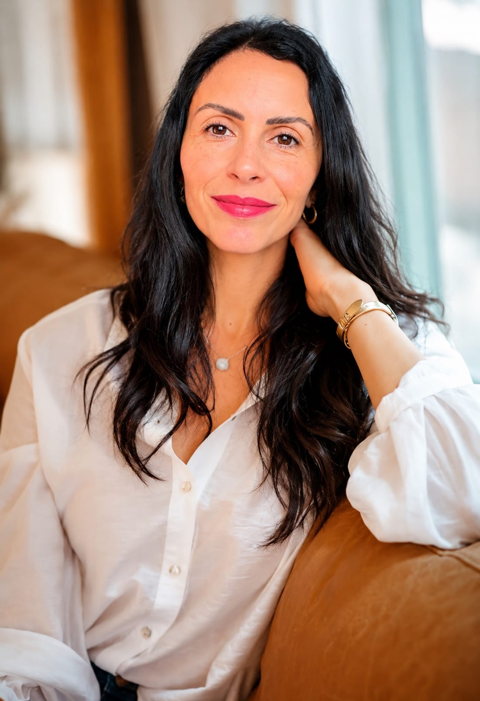
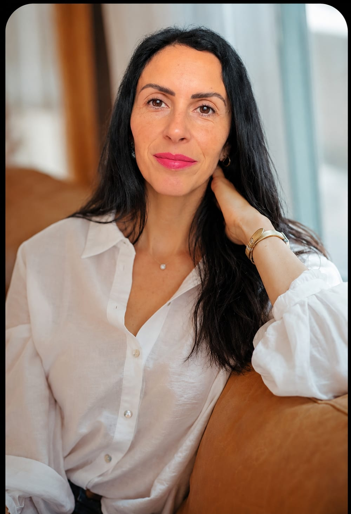

Constelação Familiar · Mentora de autoconhecimento
Te conduzo de volta pra você.
Criadora do Método LAR.
Vamos conversar ↓
“A história que te quebrou não começou em você.
Mas voltar pra ti, isso é seu pra fazer.”

Sobre mim
Você dá conta de tudo. Do trabalho, da casa, de todo mundo. Mas quando tudo silencia, sobra um vazio que você não consegue explicar.
Sou Roseane Sena, mentora de autoconhecimento e criadora do Método LAR. Hoje conduzo mulheres de volta pra casa — pra dentro de si mesmas. Mas pra te contar como cheguei aqui, preciso voltar um pouco.
Cresci aprendendo cedo que, pra ser amada, eu tinha que cuidar. Pais separados. Um pai que se perdeu no álcool. E uma menina que foi se apagando pra não incomodar. Levei isso pra vida adulta sem perceber: dava tudo pros outros e quase nada pra mim. Até o dia em que o corpo e a alma avisaram que assim não dava mais.
Foi aí que começou minha travessia de volta. Desci até a raiz do que eu carregava, fiz as pazes com a minha história e restaurei a casa que era minha. Esse caminho virou método: o LAR — Liberação, Acolhimento e Restauração. É por ele que hoje conduzo mulheres que se perderam cuidando de todos, menos de si.
Faço isso porque sei o que é cuidar da casa do mundo inteiro e dormir sem teto. E porque nenhuma mulher deveria descobrir sozinha que a casa é dela. A história que te quebrou não começou em você. Mas voltar pra ti, isso é seu pra fazer. E não precisa ser sozinha.
A casa como caminho
Liberação · Acolhimento · Restauração. Três fases pra você voltar a habitar a casa que é sua — você mesma.
O porão — onde fica o que pesa
Descer até a raiz e iluminar o que ficou guardado. Soltar o que você carrega e que nunca foi seu. A pergunta aqui é: “o que estou carregando que não me pertence?”
O sótão e o coração da casa
Encontrar os padrões herdados da sua linhagem e fazer as pazes com a sua história. Reconectar com a sua essência e dar a si mesma o que você buscou nos outros.
Reformar e, enfim, habitar
Construir novos limites e direção. Não é dar conta de mais coisas — é parar de carregar o que não é seu e voltar a se sentir viva. Morar em si mesma como dona.
“O que você não olha, se repete. O que você reconhece, se transforma.”
Como trabalho
Cada encontro é um passo de volta pra dentro de você. Comece pela porta que faz sentido pra agora.
Encontro individual, de onde você estiver. Revela as dinâmicas do seu sistema familiar — o que se repete, o que pesa, o que ainda pede um lugar — e abre espaço pra novos movimentos.
Quero agendarEncontro presencial em São José dos Pinhais, em grupo pequeno e cuidado. Participar como representante: R$ 60. Próxima data na seção de encontros.
Quero participarUma prática de leitura e harmonização energética, como parte do cuidado integrado com a sua essência.
Tenho interesseUm momento de acolhimento e reequilíbrio energético, à distância, pra reencontrar um pouco de paz no corpo.
Tenho interesseTrês encontros de base sistêmica pra ir além da porta de entrada — quando você sente que quer começar a ir mais fundo, com continuidade.
Saber maisO caminho completo pelas três fases do Método LAR, no seu tempo. Entrada seletiva — começa por uma conversa pra entender onde você está e se esse caminho é pra você.
Aplique-sePróximos encontros
Os encontros presenciais acontecem em São José dos Pinhais, em grupo pequeno. Online, sob demanda — de onde você estiver.
Quinta-feira, 19h30 · Coworking VivaMente, São José dos Pinhais. Grupo pequeno de propósito — cada mulher precisa de espaço e de cuidado. Participe constelando (R$ 300) ou como representante (R$ 60).
Elas contam
5,0 no Google · avaliações reais de quem fez a travessia
Eu poderia passar o dia aqui te falando do Método. Mas prefiro que quem já viveu te conte. Cada uma dessas mulheres um dia esteve mais ou menos onde você está agora.
Ler as avaliações no GoogleDúvidas comuns
Os dois. A Constelação Familiar individual e as práticas de Reiki e Aura Master são online — de onde você estiver, em qualquer lugar do Brasil. Os encontros de Constelação em grupo são presenciais, aqui em São José dos Pinhais.
Não é sobre falar do problema. É sobre ver. A gente revela as dinâmicas do seu sistema familiar — o que se repete, o que pesa, o que ainda pede um lugar — pra você reconhecer de onde vem aquele padrão e sentir, no corpo, o alívio de colocar cada coisa no seu lugar. Você sai diferente de como entrou.
Não. Você não precisa chegar com tudo claro. Esse encontro é justamente pra enxergar o que normalmente fica invisível. Basta vir com disposição de olhar — mesmo que dê um friozinho na barriga.
A Constelação é a porta de entrada — um primeiro movimento. A Mentoria Casa Interior é a travessia completa: percorremos juntas as três fases do Método LAR (Liberação, Acolhimento e Restauração), no seu tempo. A entrada é seletiva e começa por uma conversa.
Não. É um trabalho de desenvolvimento pessoal e autoconhecimento, de natureza integrativa e complementar. Ele não substitui acompanhamento médico, psicológico ou de qualquer profissional de saúde.
Vamos conversar
Se você se reconheceu em alguma dessas palavras, talvez não seja por acaso. Me chama — no seu tempo, do seu jeito. Eu te espero.
Chamar no WhatsApp